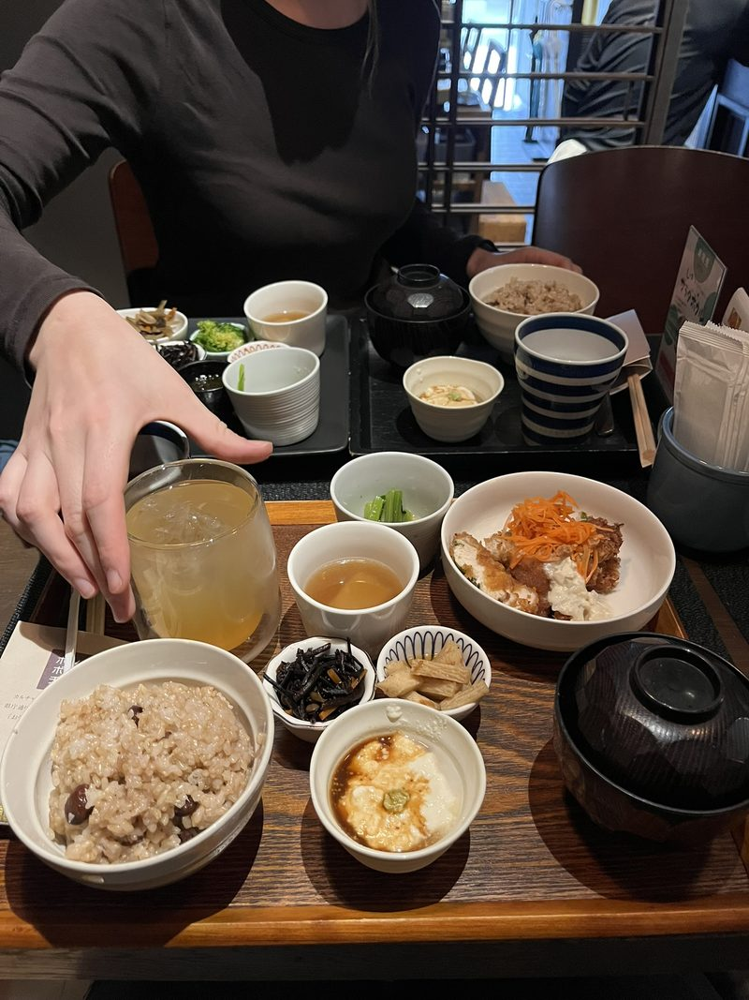
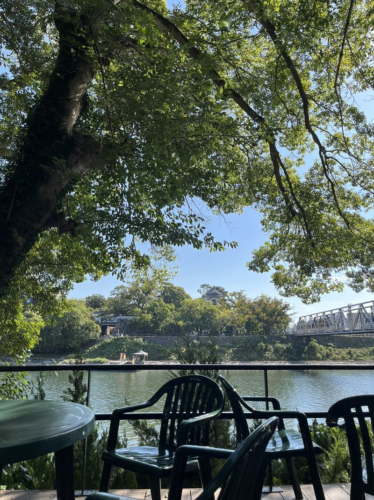
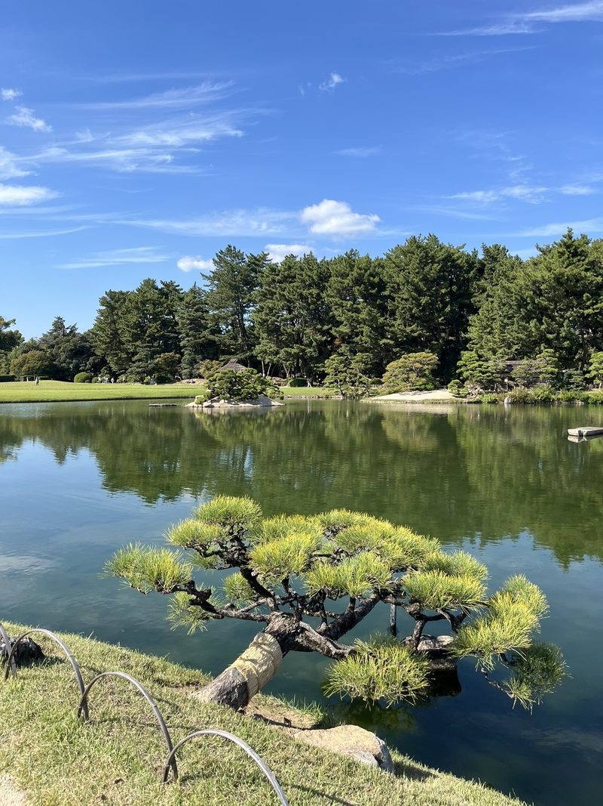
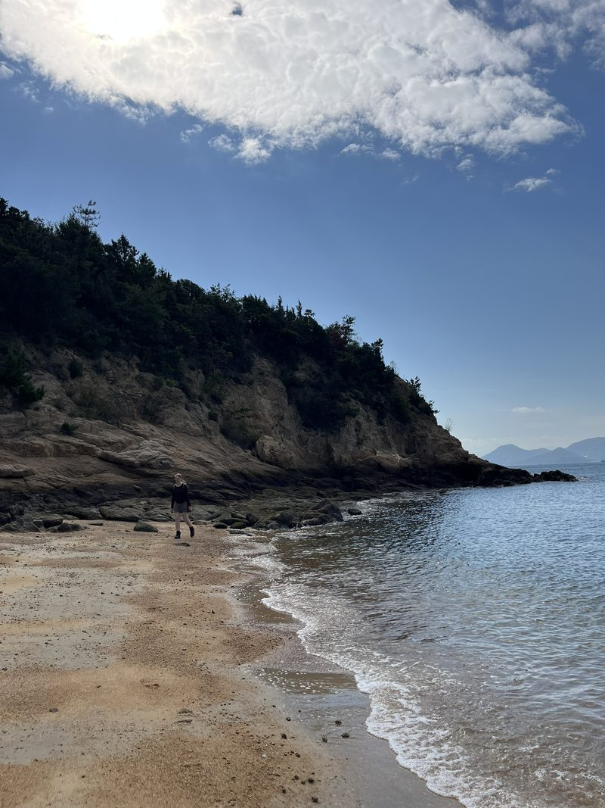
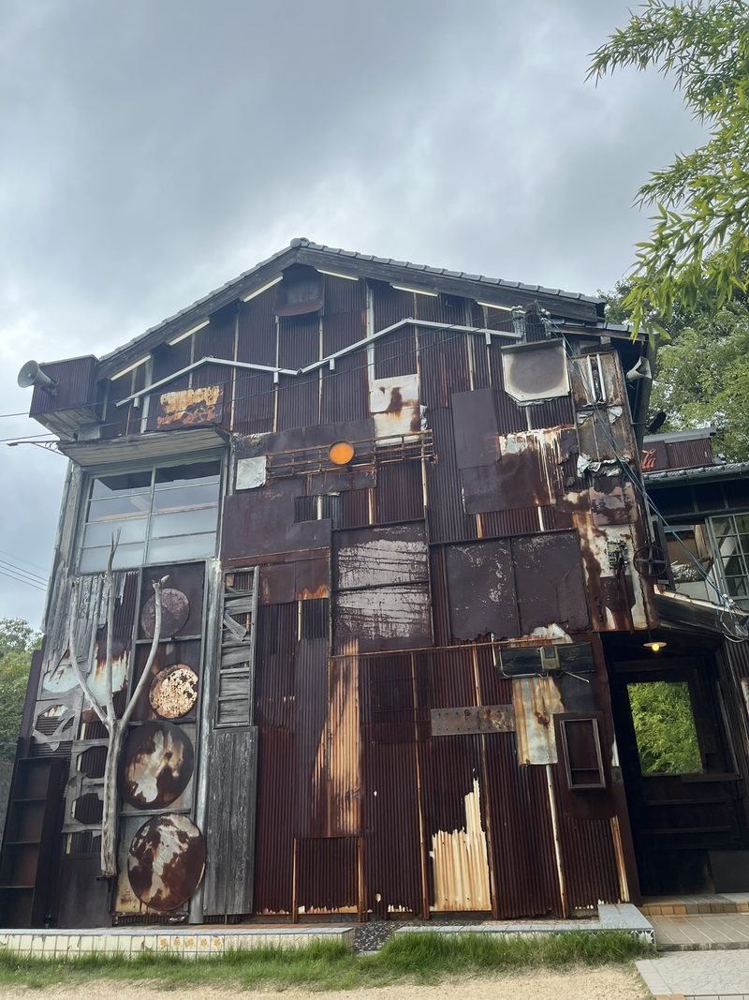
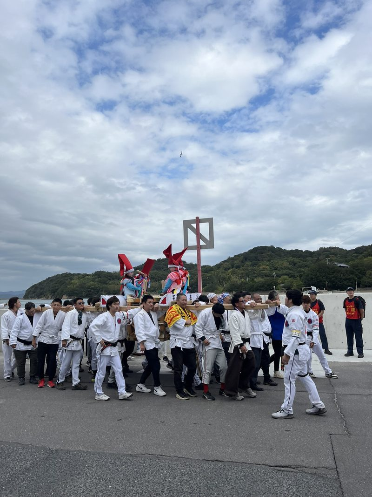
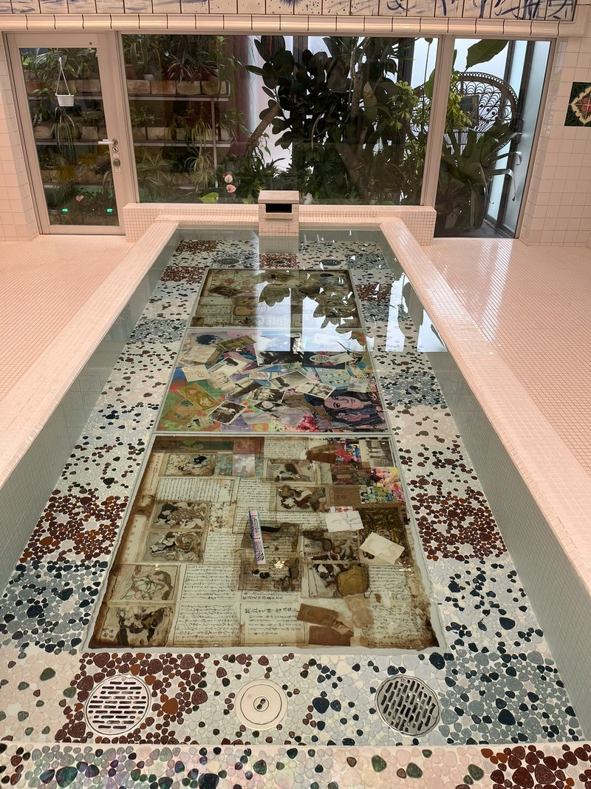
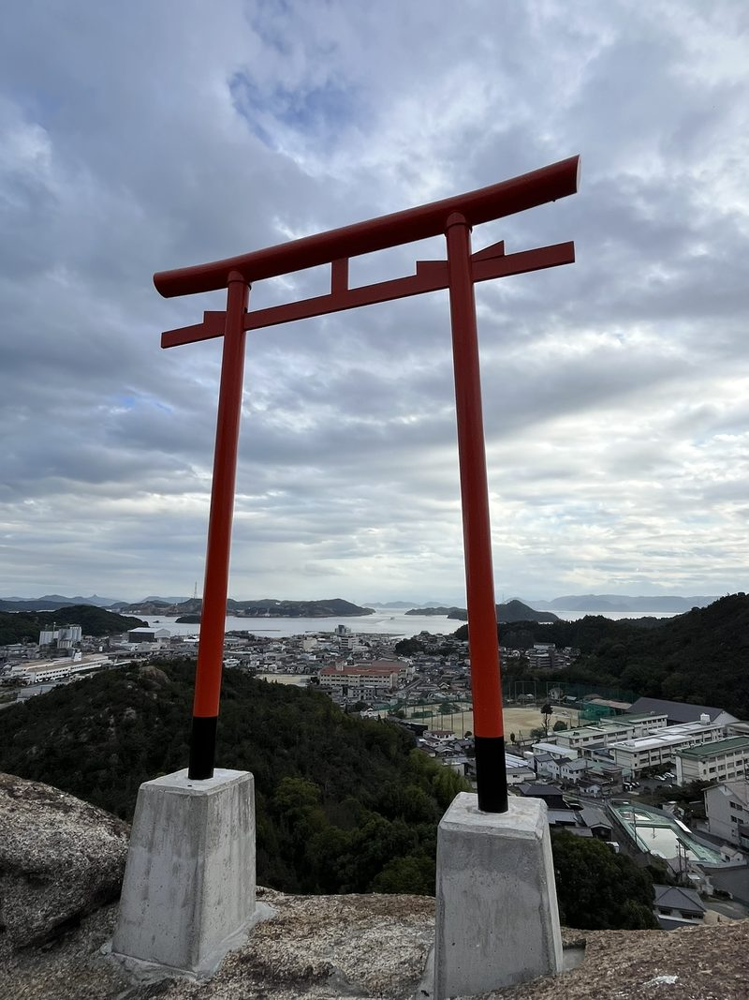
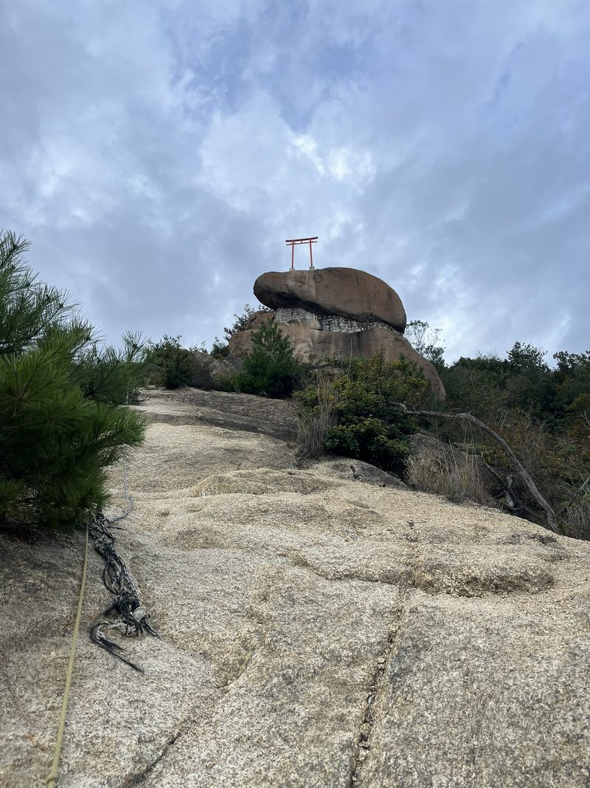

We pakken de trein naar Okayama, een grote stad met trams in plaats van metro’s. We stappen er vooral over, maar blijven er wat langer hangen voor de wonderlijke tuinen. Het bijbehorende kasteel is van binnen niet wat je van buiten hoopt. De keelklanken van het noh-theater, die als nachtuilen klinken, lokken je echter naar het Teletubbie-achtige grasveld. Maar dan botanisch: lang geleden gecomponeerd en vol filosofische, politieke en spirituele symboliek. In de vijver liggen drie kunstmatige eilanden die staan voor de mythologische Horai-eilanden uit de taoïstische filosofie. Daar wonen de onsterfelijken, en de eilanden staan symbool voor een lang leven, wijsheid en spirituele rust.



Twee ijsjes
Het is een dag voor twee ijsjes voor E.L.K. Eigenlijk zou dat elke dag kunnen: aan de kust van Uno is het ronduit tropisch. Vanaf daar steken we over naar Naoshima, het kunsteiland dat voor velen een hoogtepunt is. We sjezen er rond op een soort aangevoerde bmx-fietsen. Het rondje is, ondanks de steile bergweggetjes langs wasberen, zo gemaakt. Net als ik me afvraag of hier eigenlijk wel mensen wonen, stuiten we op een herfsttraditie die een dorpsstraat opslokt. Tientallen mannen in judopak, al dan niet vapend, dragen twee platforms met daarop elk vier kinderen, geschminkt als geisha’s in weelderige gewaden. Ze slaan op trommels en krijsen tot ademnood mee, als dank aan de lokale goden voor de oogst en in de hoop op een goede toekomst.



Ontspanningsoorden met kamers waar je simpelweg even kunt gaan zitten, vind je door heel Japan. Dit eiland lijkt er één grote: je wordt vanzelf stil en kijkt rustig om je heen. Wel voel ik me, mogelijk onterecht, enigszins belazerd door het kunstsysteem waar alles om draait: reserveringssystemen, rijen, een hype die je zelf moet opzoeken. Er zijn tientallen exposities, waarvan de aantrekkelijkste al weken uitverkocht is. Dat is het Chichu, een schijnbaar volledig ondergronds meesterwerk, in een heuvel ingegraven om het natuurlijke landschap van de binnenzee te beschermen en uitsluitend gebruikmakend van natuurlijk licht. Het is ontworpen door de legendarische architect Tadao Ando. We kunnen er niet in, maar bezoeken wel het museum-hotel Benesse House. Het is een van de voorbeelden van imponerende, brutalistisch aandoende architectuur die als kiezels in een zandstrand opduiken in het groen van het eiland. Karel Appel was here blijft hangen: een foto uit de tentoonstelling die als bewijs diende. Ook ontkom je niet aan de in augustus overleden Yayoi Kusama, beroemd om haar stippenpatronen (polka dots) en gekleurde pompoenen, die je hier levensgroot aan de baai ziet. Of aan een mixing culture bath: een jacuzzi omringd door feng shui-rotsblokken, bedoeld om de kloof tussen het westen en het oosten te verkleinen.
Met lege handen
Je fietst een rondje, weet niet precies wat je nu gezien hebt en gaat vervolgens gewillig terug in de rij voor de pont, waarvan het einde dienstbaar wordt aangewezen door een bordjesdrager. Tegelijkertijd heb ik me niet écht verdiept: ik heb niet overal gekeken en niet alles een eerlijke kans gegeven. Ik ben dus een ondankbare bezoeker, en dat voedt de innerlijke tweestrijd over mijn mening over dit eiland. Ik voel weerstand tegen opgelapte huizen zonder kunstcultuur of -geschiedenis, die tot art houses zijn gebombardeerd en waaraan bewust een kunstzinnige look is gegeven. Ze zijn bedacht uit economische malaise, en uitgenodigde makers hebben er speciaal gebouwde miniatuurvrijheidsbeelden, glazen trappen en ledinstallaties neergezet. Aan de andere kant had ik niet moeten verwachten dat het een inspirerend toevluchtsoord voor kunstenaars was, waarin je een uniek inzicht zou krijgen in hoe de Japanse makerscultuur en samenleving eruitzien. Ergens blijf je met lege handen achter.
Ik haal mijn hart op en spoel mijn hoofd leeg in het water. Aan de in beton gegoten kust proef ik het zout en ik blijf terugkeren in de badhuizen. Op dit eiland is het lokale badhuis een kunstwerk: prachtig betegelde wanden en baden, met een olifant in de kamer die de mannen van de vrouwen scheidt. Hier is het extra prettig om je zonden van je af te wassen, in die nederige positie op een krukje, waarbij je geen vierkante millimeter van je lichaam overslaat, terwijl het gloeiende water over je heen stroomt en je recht voor je uit naar de tegels kijkt. Het is verrassend comfortabel, omringd door oude mannenbillen en toch volledig in je eigen zone. Er is de behoefte om je tot onder je teennagels schoon te schrobben. Ik was zelfs mijn haar. Daarna laat je je in een sauna of heet bad zakken, ben je binnen twee minuten bijna knock-out, koel je af en begin je weer van voren af aan. Uiteindelijk kleed je je versuft om bij een bankje waar korrelige beelden worden getoond van duikende en zeilende naakte Japanse vrouwen. Het zou banaal zijn, ware het niet dat hun bewegingen zo natuurlijk en sierlijk zijn.
Kleine hapjes
Een nieuwe stijl van eten bevalt ons uitermate. De artisjokcocktail en de citroenpizza (heerlijk) doorbreken het patroon. Verder eten we in teishoku- en izakaya-stijl: rijst en soep als basis met kleine hapjes, of alleen maar kleine gerechtjes, zoals dumplings, tofukoeken, gefrituurde aubergine, udon, carpaccio, octopus-avocadosalade, ingelegde groenten en pepertjes.
De derde dag in ons fijne appartement is een dag van rust, in gang gezet door de nachtelijk meebeleefde wederopstanding van een Amsterdamse voetbalclub in Groningen. Japanse films en boeken. De enige beweging is een wandeling in de bedrukkende hitte. Wat doe je als je eenzaam voor een donkere tunnel staat? Toch maar doorlopen, in dit veilige land. In Colombia zou ik dat niet doen: een aanval van vier jaar geleden siddert in verlaten straten nog steeds door mijn lijf. Maar hier hoef je niet bang te zijn voor narcos of voor vervaarlijk klinkende honden die loslopen. Dit zijn zo’n beetje de veiligste straten ter wereld, zeker voor willekeurige wandelaars, en de yakuza vergrijst snel. Zolang ik in louche bars mijn drankje in de gaten houd, kan er weinig gebeuren.
Twijfelachtige touwen
Ook op de tocht omhoog kom ik niemand tegen. Onderweg hangen trommels waarop je moet slaan, maar er komt geen reactie. De paden worden smaller, tot er alleen nog gladde rotsen omhoog zijn en ik mijn lot laat bungelen aan daarvoor aangewezen, twijfelachtige touwen. De steile boulderklim levert uiteindelijk een ultiem uitzicht op over het eilandenrijk voor de kust. Alleen, zittend op een rots, waan ik me even onoverwinnelijk. “Denk terug aan deze tocht in zware tijden”, is de uitzwaaiende boodschap.



Kogelhard het westen in.